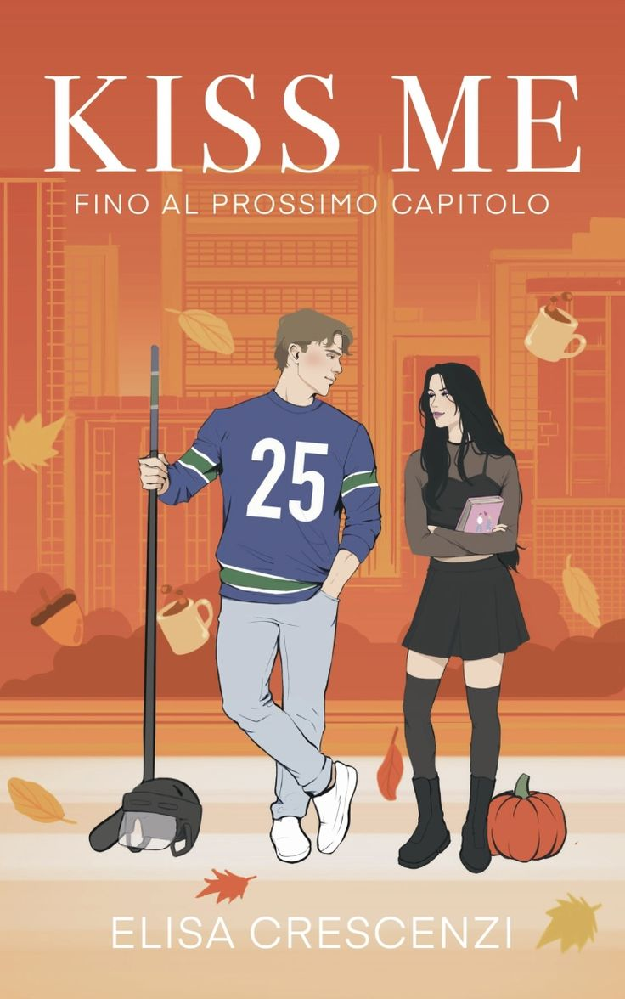

Kiss me - Fino al prossimo capitolo
La Trama
Prima di lui non avevo mai capito quanto fossero speciali i baci. Dopo di lui, non so come potrò sopravvivere senza. Joel Dixon, giocatore dei Vancouver Canucks, è sempre sotto i riflettori, ma non per i suoi meriti sportivi. Pur avendo trentaquattro anni, si comporta ancora come un irresponsabile, almeno finché l’ennesimo articolo denigratorio non costringe il suo allenatore a prendere provvedimenti. Trenta giorni lontano dai guai, dalle donne e dalla sua squadra. Per Joel non c’è via d’uscita: tornare al suo paese natale, dove si è sempre sentito fuori posto, è l’unica soluzione per evitare altri errori. Sulla carta, il piano sembra perfetto, peccato che gli basti mettere piede nel locale del fratello gemello per capire che la partita è ancora tutta da giocare. Candice Davis è un controsenso vivente. Ventunenne con una predilezione per il nero, nasconde all’interno della sua casa un mondo fatto di cinnamon rolls, bevande zuccherate e romanzi rosa. Trasferitasi a Maple Hollow due anni prima per stare vicino ai nonni, ha trovato il suo angolo di serenità tra il lavoro al locale di Joe e la fattoria dei Dixon. Le sue giornate scorrono tranquille, fino al momento in cui davanti a lei appare la copia più muscolosa, irritante e incredibilmente sexy del suo capo. È odio a prima vista, eppure… Lui sembra detestarla. Lei giura di non sopportarlo. Un mese potrebbe essere un tempo infinitamente lungo, oppure… troppo breve. Tra battibecchi, segreti e un’attrazione che diventa impossibile da ignorare, Joel e Candice finiranno sull’orlo di una scelta: proteggere il cuore o rischiare di perderlo per sempre.
La Mia Opinione
Ho iniziato questo libro attirata dalla copertina e da un video su TikTok che ne mostrava la grafica interna, ma non mi aspettavo di immergermi così tanto nella storia. Mi ha fatta sognare fin dalle prime pagine: l’ambientazione in una piccola città e i tantissimi riferimenti a Gilmore Girls(la mia serie del cuore, rewatch obbligatorio ogni autunno!) mi hanno rapita. Mi ha fatto venire voglia di trasferirmi davvero in una cittadina così ricca di tradizioni.
Personaggi
Candice è una sorpresa: all’apparenza la tipica ventunenne “dark” e dura, ma che nasconde un lato dolce e sognatore. E poi c’è Joel… il classico “uomo malessere” che in fondo tutte vorremmo. Sembra menefreghista ed egocentrico, ma bastano pochi giorni lontano dal caos per scombussolare la sua esistenza e fargli capire cosa conta veramente.
Stile di Scrittura
Amo follemente la scrittura di Elisa Crescenzi: è talmente fluida che le pagine volano. Arrivi alla fine ancora affamata, con la voglia di averne di più.
A Chi Lo Consiglio
È perfetto per chi ama il Romance, ma anche per chi non crede alle seconde occasioni. Questo libro vi dimostrerà come basti poco per trasformare le proprie convinzioni in nuove sfide..
🔥 A colpo d'occhio
- ☕ Atmosfera: Piccola città, accogliente, invernale.
- 🔥 Chimica: Odio-Amore (Slow Burn).
- 🌶️ Spicy: 2/5 (C’è passione ma non è volgare).
- 😮💨 Emozione: Prepara i fazzoletti!
- 🍂 Vibe: Gilmore Girls vibes, cioccolata calda, seconde occasioni.